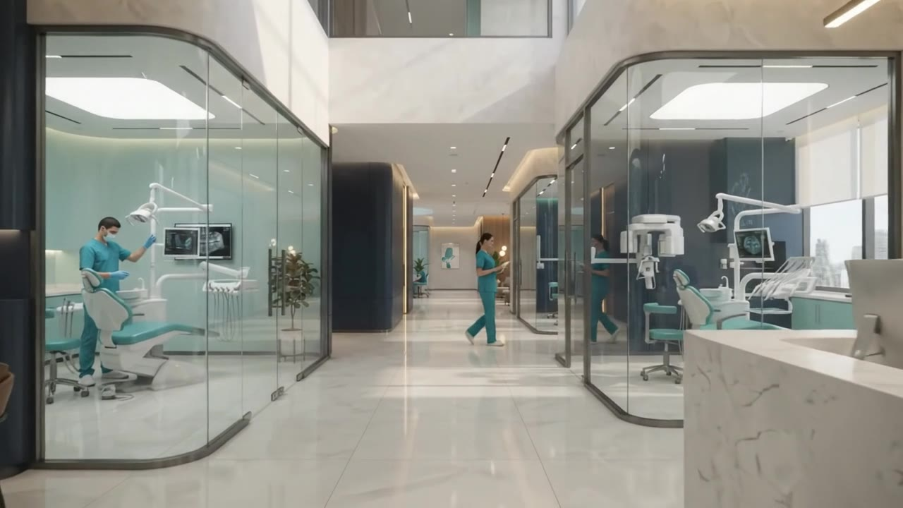
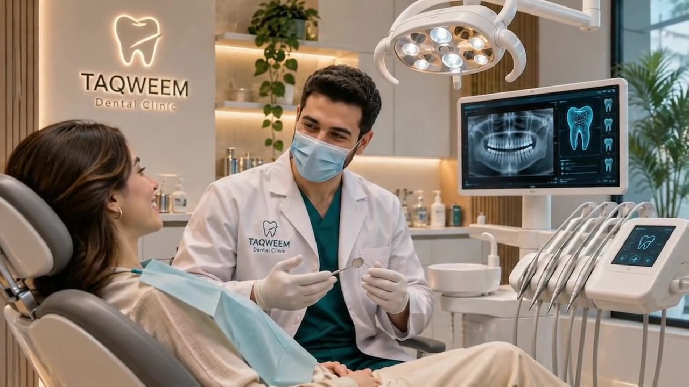
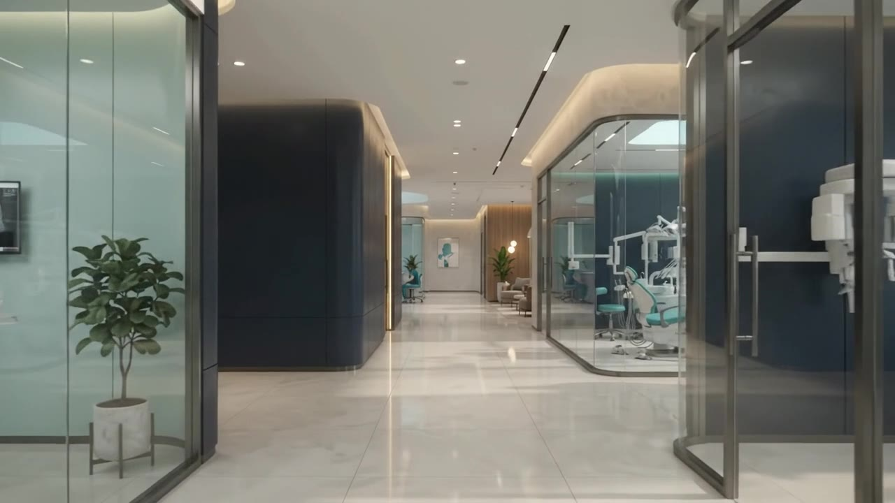

Start with a conversation.
Make space for questions and concerns before discussing possible care.
An immersive journey from our doors to the science behind the smile.
DISCOVER WHAT'S INSIDE ↗An experience designed around clarity, comfort and the people behind care.
A visit is more than a treatment. It's a conversation, a sense of calm, and a clearer understanding of what comes next.
MEET THE PEOPLE ↗A calmer experience depends on the people you meet. These roles are illustrative; verified clinician profiles will be shown after database integration.

Clinicians guide consultations, explain options and develop appropriate care plans.
ILLUSTRATIVE ROLES · VERIFIED PROFILES TO BE CONNECTED
Behind every confident smile is care that puts people first.
An illustrative molar emerges from a digital scan environment — then responds to your touch.
Watch the simulated surface transform as the teal scan passes from crown to roots.
Discover services and trusted specialists — shown here as layout concepts, not live clinic data.
Explore an illustrative view of dental imaging and a simulated molar surface transformation. This visual demonstration does not provide diagnosis.
CONTINUE THE JOURNEY ↗From first conversation to next steps, the experience is designed around understanding — not just technology.
Make space for questions and concerns before discussing possible care.
Use clear visual information to support meaningful conversations with clinicians.
Agree on the next step through the clinic's real patient appointment flow.
Explore how booking will connect to the existing patient-authenticated Laravel application. This preview creates no appointments.
PREVIEW ONLY · NO APPOINTMENT IS CREATED

TAQWEEM / YOUR EXPERIENCE STARTS HERE